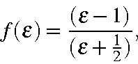
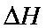
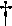

Unlike the Self-Consistent Reaction Field model [74], the Conductor-like Screening Model (COSMO) is a continuum approach [30] which, while more complicated, is computationally quite efficient. The expression for the total screening energy is simple enough to allow the first derivatives of the energy with respect to atomic coordinates to be easily evaluated.
The COSMO procedure generates a conducting polygonal surface around the system (ion or molecule), at the van der Waals' distance. By introducing a
ε-dependent correction factor,

into the expressions for the screening energy and its gradient, the theory can be extended to finite dielectric constants with only a small error.
The accuracy of the method can be judged by how well it reproduces known quantities, such as the heat of solution in water (water has a dielectric constant of 78.4 at 25C). Here, the keywords used were:
A test is
provided to allow COSMO to be validated.
From the Table we see that the glycine zwitterion becomes the stable form in water, while the neutral species is the stable gas-phase form.
(After the COSMO paper was published, improvements in the method made the results shown in the Table invalid. However, the general conclusion that the method is of useful accuracy is still true.)
The COSMO method is easy to use, and the derivative calculation is of sufficient precision to allow gradients of 0.1 to be readily achieved.
Table:
Calculated and Observed Hydration Energies
(files)
Compound
Method
(kcal/mol)
Hydration
gas phase
solution phase
(calc.)
Enthalpy(exp.) 
NH4+
AM1
150.6
67.29
83.3
88.0
N(Me)4+
AM1
157.1
103.6
53.5
59.9
N(Et)4+
AM1
130.4
84.1
46.3
57.0
Glycine
neutral
AM1
-101.6
-110.4
8.8
-
zwitterion
AM1
-58.0
-106.9
48.9
-
: Y. Nagano, M. Sakiyama, T. Fujiwara, Y. Kondo, J. Phys. Chem., 92, 5823 (1988).
=n.n Controls the radius, up to which the segment-segment interactions are evaluated on the basis of the basic grid points. Default = 2.0. For accurate calculations or very high dielectric energies*, (e.g. ions) larger values may be preferable. The calculation time may increase as DISEX2 (until all interactions are calculated accurately).
=n.n Effective VDW radius of the solvent molecule. Default = 1.3Å.
Solvent Accessible Surface
The solvent accessible surface is a continuous surface of the molecule which can be reached by the center of charge of a solvent molecule. The calculation of the SAS is carried out as follows:
Each atom is assigned a van der Waals' radius. VdW radii used in COSMO are given in the Table.
Table:
Van der Waals radii (Angstroms) used in COSMO
I
R
II
R
III
R
IV
R
V
R
VI
R
VII
R
H
1.08
Li
1.80
C
1.53
N
1.48
O
1.36
F
1.30
Na
2.30
Al
2.05
Si
2.10
P
1.75
S
1.70
Cl
1.65
K
2.80
Ca
2.75
Br
1.80
I
2.05
To each radius is added a distance equal to the radius of the solvent. By default, this is 1.3Å, but may be changed by the user using RSOLV=n.nn. This gives the distance from the nucleus to the center of a solvent molecule.
A set of points is generated on this surface. These points produce a basic grid.
All points which are inside the surface of any other atom are excluded.
The remaining points are moved towards the center of the atom. The distance moved is equal to the distance of the center of charge of the solvent molecule from the center of the solvent molecule. By default, this distance is set to RSOLV, but may be set explicitly by keyword RSOLV=n.nn.
Each of the remaining points represents a small area of the solvent accessible surface. The total SAS is calculated from the number of points.
From this definition of the SAS we see that the SAS of each atom is a surface of radius equal to the van der Waals' radius plus the radius of the solvent molecule minus the distance of the center of charge of the solvent molecule to the center of the solvent molecule. In other words, the radius is the VdW radius plus the distance from the surface of the solvent molecule to the center of charge of the solvent molecule. By default, this extra distance is zero. Only that part of the atom surface which can be touched by the solvent molecule is used. This means that only those atoms on the surface of the molecule can contribute to the SAS. Of those atoms that are on the surface of the molecule there will be parts of the surface which cannot be reached by the solvent because the solvent molecule is too bulky.
calculations run in general without problems. On gas-phase geometries they give useful solvation energies for neutral rigid molecules.
For geometry optimization Eigenvector Following has proved to be most efficient in combination with COSMO. Gradient norms of about 1% of the dielectric energy should be reachable, in many cases even less. Nevertheless, don't use a too small GNORM criterion, since the calculation may have convergence problems.
Keep in mind that energy differences of about 1% of the dielectric energy may arise due to small differences in the segmentatation.
calculations can now be done, and C.I. gradients are now valid; this has been the result of recent work by Dr Klamt.
Footnotes
* : The dielectric energy is the energy of stabilization arising from the interaction of the charges in the solute with the induced charges on the solvent accessible surface plus the electrostatic energy due to the charges on the SAS interacting with each other.